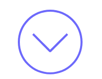

Témoignages
Découvrez les interviews de ces joueurs de jeux-vidéos aux histoires liées à la microtransactions
Decouvrez leurs témoignages
SON HISTOIRE:
ça a commencé au début par un simple achat, je me disais que ça ne ferait pas mal, puis ensuite j'ai commencé à acheter de plus en plus de skin différent car je voulais me démarquer des autres joueurs, c'est quand j'ai commencé à regretter les achats que je faisais que j'ai voulu arrêté, mais c'est de plus en plus compliqué car j'ai quand-même continué à jouer et que de nouveau skins continue de sortir.
Laura
Joueuse de Fortnite
SON HISTOIRE:
Je joue à World of Warcraft depuis toujours mais ce n'est que récemment, quand j'ai perdu mon boulot, que j'y ai joué de plus en plus et que je faisais de plus en plus d'achat, que ce soit de skin ou de monture, il m'arrivait même de passer plus de temps à acheter une nouvelle monture que de jouer au jeu. Vu le fait que je ne gagne plus d'argent et que j'en dépense toujours plus, j'ai commencé à avoir des problèmes d'argent, j'ai même failli perdre mar carte bancaire. Aujourd'hui, grâce à une thérapie, je me sens mieux, je passe moins de temps à acheter des skins et j'ai même retrouvé un nouveau travail.
Lucas
Joueur de Wow
SON HISTOIRE:
Cela ne fait que quelque semaine que j'ai suprimé ce jeu de mon portable mais j'ai encore très envie d'y retourner. Dans ce jeu, je devais construire mon springfield des simpson et je pouvais acheter avec de l'argent réel, de la monnaie du jeu, et avec cette monaie, je pouvais acquérir des objet unique, j'y ai dépensé près de 300€, mais j'ai rapidement arrêté car j'avais peur de dépenser trop. Bien qu'ayant arrêté, l'envie est toujours là et c'est très dur d'y résister.
Alissia
Joueuse de Simpson
SON HISTOIRE:
Les micro transactions sont une de mes dépenses principales tout les mois, certaines personnes vont acheter des habits Gucci ou Dior pour ce faire plaisir, moi je m'achète des skin fortnite ! Ma passion pour le jeux vidéo a commencé quand j'avais 6 ans et depuis je joue à de multiples jeux vidéo tous plus différents les uns que les autres mais quelque chose a changé depuis quelques années, la possibilité de personnaliser son avatar pour se différencier et cela à changé ma vie de gamer. Aujourd'hui je m'achète des tenues de 10 à 20 € pour mon plaisir, pour avoir une apparence unique avec les différentes modifications que renouvelle le jeu chaque soir